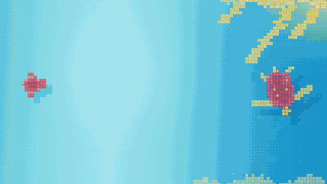
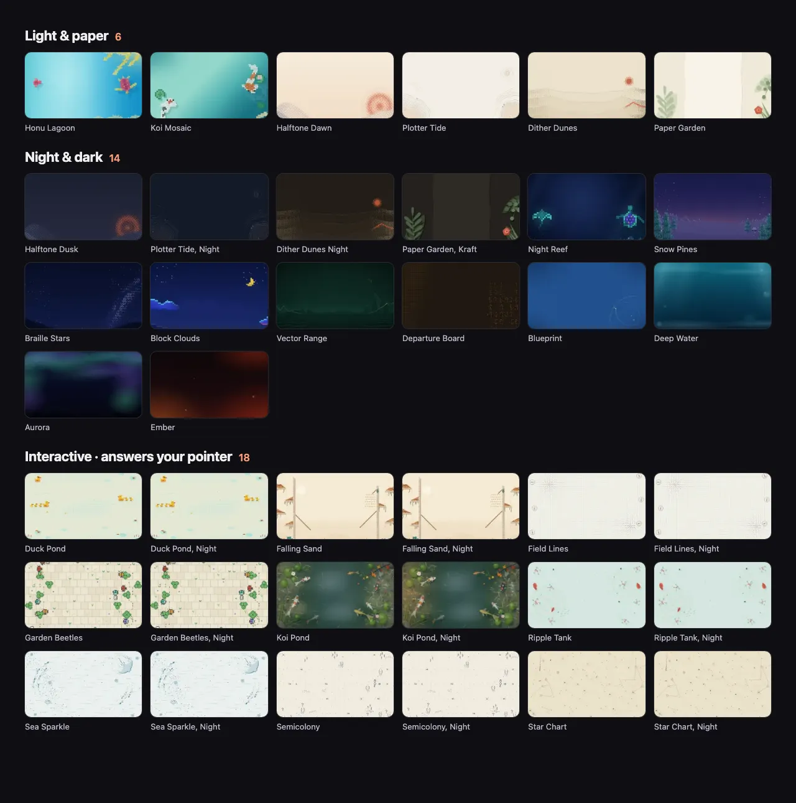
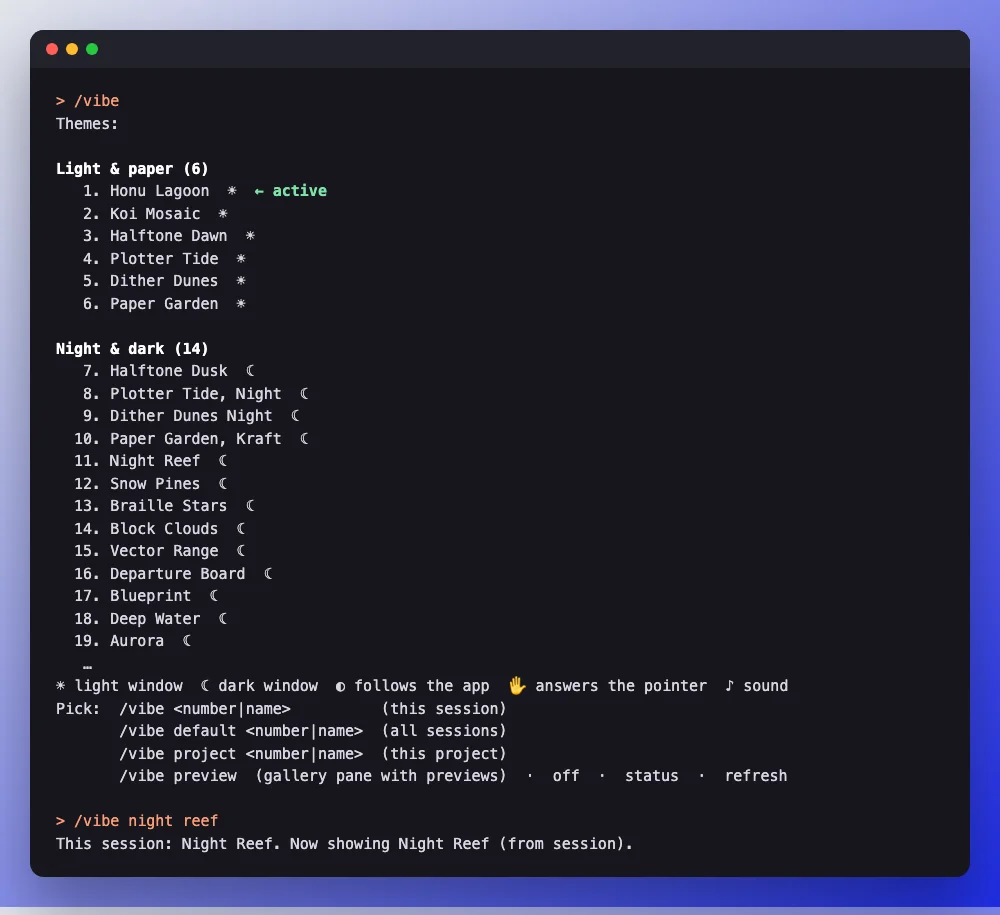

Type /vibe. Change the scene behind Claude Code.
A free, open-source plugin for the Claude desktop app and Claude Code CLI: 38 official animated scenes, a gallery with real previews, and a scene per project. Local, lightweight, about a minute to set up.

Install
/vibe and pick a number.Why people use it
🎯 One command
/vibe 11 or /vibe night reef. No per-plugin commands to remember.
🖼 See before you pick
/vibe preview opens a gallery with each scene's real artwork and one-click Preview / Default / Project.
🗂 A scene per project
Session beats project beats default. Calm paper at work, a koi pond for the side project.
🪶 Lightweight
No daemon, no server, no network. One small config file you can read.
38 official scenes, ready on install

Want more? Browse community themes at buildwithclaude.com/themes. Rainy Window, Garden and Backdrops join /vibe automatically once installed.
How it decides what you see
Session pick (/vibe night reef) → beats → Project pick (/vibe project koi mosaic) → beats → Global default (/vibe default honu lagoon). inherit removes a pick; /vibe off shows no scene.

FAQ
How do I change the background or theme of Claude Code?
Install VibeSwitch and the official scenes, open a new session in the Claude desktop app's Code tab and type /vibe.
Can each project have its own Claude Code theme?
Yes: /vibe project <theme> in that project.
Does it work in the Claude Code CLI?
Yes. Listing, switching and saving picks work in the terminal; the scenes and the gallery are drawn by the Claude desktop app.
Does it slow anything down or phone home?
No. It runs when a session starts or when you use /vibe, and makes no network calls.